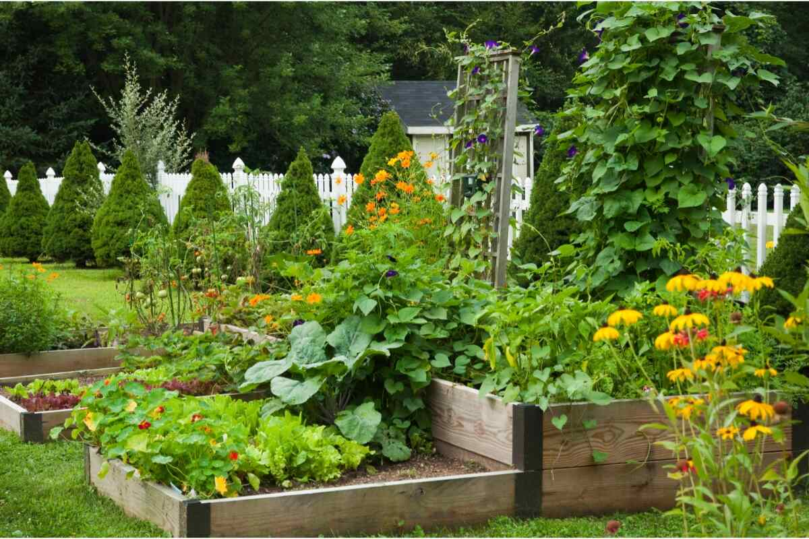

Class 1 Lab
This is my note for a backyard garden. It also serves as a practice for lab 102 and 201 as well.
Part of the website will cover about soil science and appropriate plant. The applied sciences that underline sustainable landscaping and gardening are young and evolving, resulting in new approaches that spark vigorous debate among experts and gardeners alike.
The other parts will focus on specific herbs, fruits, vegetables and flowers that I want include in my backyard garden.
The Science
A science-based approach to garderning allows gardeners to become more sustainable to their practices. Though overused the term "sustainable" has actual value when used in concert with scientific evidence. Sustainability embodies the following actions:
- Choosing plants and products wisely to conserve natural resources.
- Creating gardens and landscapes that don't require continuous input of packaged fertilizers and pesticides.
- Discovering and supporting the natural processes that keep home garden and landscaping healthy, functional and sources of joy.
The Herbs
As a cook, herbs are my best friends. A pinch of crushed rosemary can light up a beef pasta sauce. Spring rolls could not be completed with mint, thai basil and chives. Fresh dill will bring the best out of steamed fish.
The Vegetables and Fruits
This comprehensive guide covers how to start a vegetable garden from scratch, which vegetables to grow, and when to plant what. I added a “starter” garden plan consisting of easy-to-grow vegetables, companion planting techniques! Let this year be the year that you grow a successful garden!
The Flowers
Flowers have been symbols of beauty in most civilizations of the world, and flower giving is still among the most popular of social amenities. As gifts, flowers serve as expressions of affection for spouses, other family members, and friends; as decorations at weddings and other ceremonies; as tokens of respect for the deceased; as cheering gifts to the bedridden; and as expressions of thanks or appreciation.